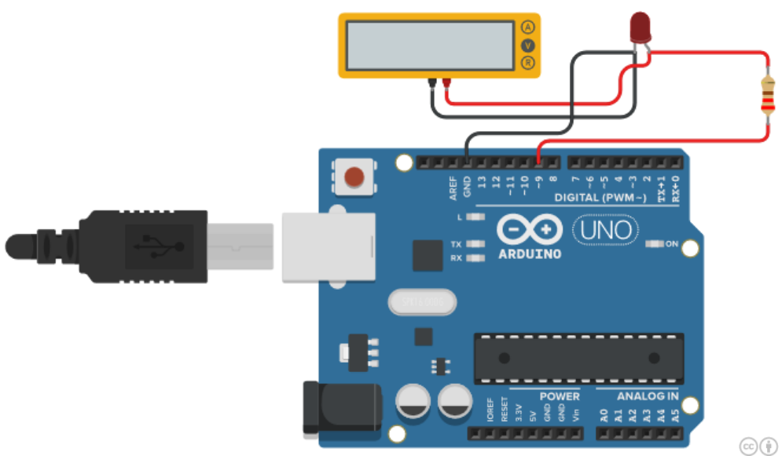
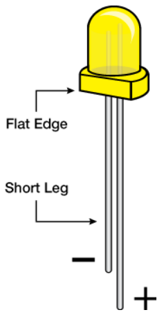
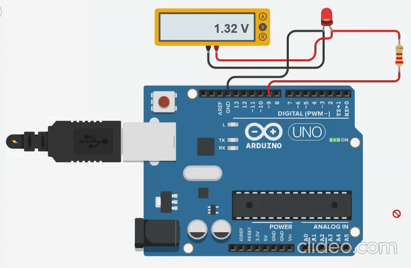

This example demonstrates the use of the analogWrite() function in fading an LED off. AnalogWrite uses pulse width modulation (PWM), turning a digital pin on and off very quickly with different ratios between on and off, to create a fading effect.
Components Required¶
You will need the following components −
- 1 × Breadboard
- 1 × Arduino Uno R3
- 1 × LED
- 1 × 330Ω Resistor
- 2 × Jumper
Procedure¶
Follow the circuit diagram and hook up the components on the breadboard as shown in the image given below.

Note − To find out the polarity of an LED, look at it closely. The shorter of the two legs, towards the flat edge of the bulb indicates the negative terminal.

Sketch¶
Open the Arduino IDE software on your computer. Coding in the Arduino language will control your circuit. Open the new sketch File by clicking New.
Arduino Code¶
/*
Fade
This example shows how to fade an LED on pin 9 using the analogWrite() function.
The analogWrite() function uses PWM, so if you want to change the pin you're using, be
sure to use another PWM capable pin. On most Arduino, the PWM pins are identified with
a "~" sign, like ~3, ~5, ~6, ~9, ~10 and ~11.
*/
int led = 9; // the PWM pin the LED is attached to
int brightness = 0; // how bright the LED is
int fadeAmount = 5; // how many points to fade the LED by
// the setup routine runs once when you press reset:
void setup() {
// declare pin 9 to be an output:
pinMode(led, OUTPUT);
}
// the loop routine runs over and over again forever:
void loop() {
// set the brightness of pin 9:
analogWrite(led, brightness);
// change the brightness for next time through the loop:
brightness = brightness + fadeAmount;
// reverse the direction of the fading at the ends of the fade:
if (brightness == 0 || brightness == 255) {
fadeAmount = -fadeAmount ;
}
// wait for 30 milliseconds to see the dimming effect
delay(300);
}
Code to Note¶
After declaring pin 9 as your LED pin, there is nothing to do in the setup() function of your code. The analogWrite() function that you will be using in the main loop of your code requires two arguments: One, telling the function which pin to write to and the other indicating what PWM value to write.
In order to fade the LED off and on, gradually increase the PWM values from 0 (all the way off) to 255 (all the way on), and then back to 0, to complete the cycle. In the sketch given above, the PWM value is set using a variable called brightness. Each time through the loop, it increases by the value of the variable fadeAmount.
If brightness is at either extreme of its value (either 0 or 255), then fadeAmount is changed to its negative. In other words, if fadeAmount is 5, then it is set to -5. If it is -5, then it is set to 5. The next time through the loop, this change causes brightness to change direction as well.
analogWrite() can change the PWM value very fast, so the delay at the end of the sketch controls the speed of the fade. Try changing the value of the delay and see how it changes the fading effect.
Result¶
You should see your LED brightness change gradually. 